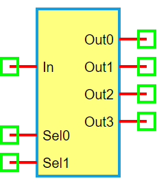

1-to-4 Demultiplexer
Information


A 1-to-4 demultiplexer (DEMUX) is a digital circuit that takes a single input and routes it to one of four outputs, depending on the values of two select lines (Sel0 and Sel1).
Selection logic:
Sel1 Sel0 = 00 → Out0 = In
Sel1 Sel0 = 01 → Out1 = In
Sel1 Sel0 = 10 → Out2 = In
Sel1 Sel0 = 11 → Out3 = In
Truth Table
Ports
In: Input signal
Sel0: Least significant select bit
Sel1: Most significant select bit
Out0–Out3: Four output signals
Model
The DEMUX1to4 model implements a 1-input, 2-select digital demultiplexer.
Attributes:
In (dsignal): Input digital signal
Sel0, Sel1 (dsignal): Select lines
Out0–Out3 (dsignal): Four output lines
Methods:
digital(): Routes the input signal to one of the outputs based on Sel1 and Sel0:
from pyams.lib import dsignal, model
class DEMUX1to4(model):
""" 1-to-4 Demultiplexer """
def __init__(self, In, Sel0, Sel1, Out0, Out1, Out2, Out3):
self.In = dsignal(direction='in', port=In)
self.Sel0 = dsignal(direction='in', port=Sel0)
self.Sel1 = dsignal(direction='in', port=Sel1)
self.Out0 = dsignal(direction='out', port=Out0)
self.Out1 = dsignal(direction='out', port=Out1)
self.Out2 = dsignal(direction='out', port=Out2)
self.Out3 = dsignal(direction='out', port=Out3)
def digital(self):
""" Perform DEMUX logic """
s0 = self.Sel0
s1 = self.Sel1
self.Out0 += ~s1 & ~s0 & self.In
self.Out1 += ~s1 & s0 & self.In
self.Out2 += s1 & ~s0 & self.In
self.Out3 += s1 & s0 & self.In
Command syntax
The syntax for defining a 1-to-4 demultiplexer in a PyAMS simulation:
# Import the model
from pyams.models import DEMUX1to4
# DEMUX: instance name
# In: input; Sel0, Sel1: select lines; Out0–Out3: outputs
DEMUX = DEMUX1to4(In, Sel0, Sel1, Out0, Out1, Out2, Out3)